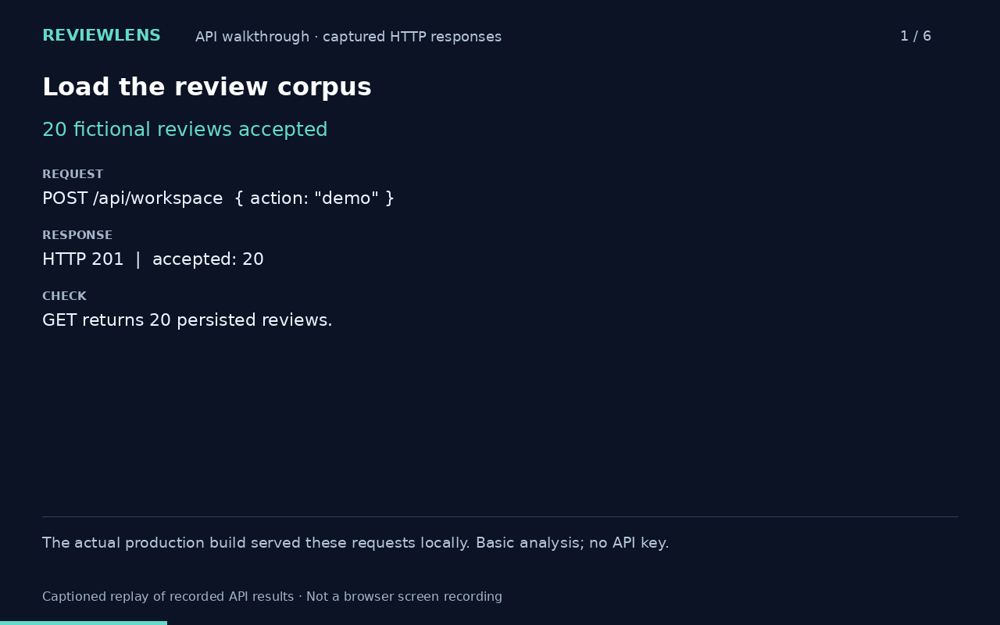

I scope the project, coordinate delivery with your engineers, and manage testing and rollout.
Where no-code tools fit, I build the automation myself.
I'm Saahil, a technical project manager. I've led AI and automation delivery across life insurance and
fintech, including a conversational-AI calling workflow, RAG and agent deployments on client servers, and
rule-based automation of 20+ recurring reports.
Project-based work · About 20 hours a week, mostly during US hours · Based in Delhi (IST)
~50 hrs a week of manual reporting saved across 20+ reports20+ analytics programs for Fortune 500 pharma clients3+ AI, automation and analytics programs run at once
Work for employers and clients
Each case says what I owned. Client names, data and internal details stay confidential, so these are
short; I'm happy to go deeper on a call.
For a life insurer · 2026
Led delivery
Conversational AI that turns agent complaints into tracked cases
Goal
Capture complaints from inactive sales agents and follow each one through to resolution.
What shipped
An outbound AI calling workflow: it calls the agent, captures and classifies the complaint, logs a structured case, and coordinates stakeholder follow-up through to resolution.
My part
Led delivery, coordinating business, analytics and technology stakeholders across requirements, testing and implementation readiness.
For a life insurer · 2026
Led delivery
Recurring reports, automated
Context
Recurring business and performance reports, each with its own business conditions and stakeholder requirements.
What shipped
I used deterministic rules to automate 20+ recurring business and performance reports.
Result
About 50 hours of manual effort saved per week. This is an approximate total across the 20+ reports, not the saving from any single report.
Enterprise project · RAG
Led delivery
An M&A knowledge assistant over confidential documents
What it does
Retrieval-augmented generation over confidential internal documents, so M&A research questions get answers that point back to their sources.
My part
Led delivery, from requirements and testing through deployment on client servers.
Note
The documents and implementation are confidential, so nothing from them is shown here.
Two ways I can help
After a short call I send a written scope and a quote. Nothing starts until we've agreed who owns what.
Service
What you get
Who builds
Automate a process
You have a manual, repeating process. I map it, agree on the rules and exceptions, then build and test the workflow and hand it over with documentation.
Me, with no-code tools such as Zapier and Power Automate
AI and automation project delivery
You have an idea and need it delivered. I run it as a proper project: requirements, a Jira backlog, sprints, testing, UAT and release.
Your engineers, or me with AI coding assistants for small tools
Tools I work in: Zapier, Power Automate, Power BI, SQL, Excel, Jira, Confluence, Notion.
Examples of workflows I can help automate
Representative examples of what you can hire me for. I've worked on similar no-code automation in my company work, and those details stay confidential.
Weekly project reporting
Collect task updates, flag overdue work and missing information, and prepare a status report for approval.
Lead inquiry management
Capture inquiries, check for duplicates, assign an owner and flag leads awaiting a response.
Client onboarding
Create project folders and checklists, assign responsibilities and follow up on missing documents.
AI-assisted complaint triage
Summarize and categorize complaints, route cases to the appropriate owner and send unclear or sensitive cases for review.
Request and approval tracking
Route requests for approval, record decisions, notify requesters and flag overdue responses.
Things I've built
I build with AI coding assistants (Codex and Claude). I set the scope, write the acceptance criteria and
evaluations, review the work and make the release calls. Each case says what was mine, what it proves
and what it doesn't.
ReviewLens
Answers questions about product reviews, with every number calculated in code and every quote traceable to its source.
Basic analysis shippedSemantic search failed its gate, not shipped
Full case study
The problem I was testing
An AI feature that demos well tells you almost nothing about whether it works. I wanted a project where "working" was defined and measured before anything shipped.
Decisions that were mine
Every statistic is calculated in code, so the core value never depends on a paid API key. Retrieved examples are never used as a denominator.
A golden set of 14 questions with human-labeled answers, and release thresholds agreed on before the semantic feature was measured.
A retrieval check in CI that fails the build below threshold, and a holdout set that refuses to run without an explicit flag and logs every run.
The no-go: on-device semantic search scored recall@5 of 0.267 against a bar of 0.70. A sweep of 66 thresholds didn't clear it. I didn't move the bar, and the feature stays off.
What it doesn't prove
It's a solo build on fictional data. It says nothing about adoption, business impact or leading an engineering team.

A captioned replay of real API responses, using 20 fictional reviews.
A manager writes a brief once; the team asks the bot instead of guessing, and the bot answers only from the approved brief.
140 tests passLive testing in progress
Full case study
How it works
Manager approves a brief; every line gets an ID
Someone asks a question
The model must cite brief lines by ID
Code checks every citation word for word
Not covered? It goes to the manager
The answer becomes part of the brief
Decisions that were mine
The model proposes; the code decides. An answer labeled "From the brief" only ever shows the approved text, never the model's own wording.
Guesses are labeled as guesses, and anything that would commit work goes to the manager instead.
Permissions are enforced in the engine, not the screens. Answers made from an out-of-date brief are thrown away and redone.
What it doesn't prove
The 140 tests run against a stand-in model. A 12-step live check against the real Claude API is in progress, and its results aren't published yet.
Code and test log available on request.
Automated tests
140 passed
Live API check
12 steps, in progress
Built with
Python, Streamlit, SQLite, Claude
Questions founders ask
What do you build yourself?
No-code workflows (Zapier, Power Automate), reports and dashboards (Power BI, SQL), and small tools built with AI coding assistants. For larger products, your engineers build it and I run the project: Jira backlog, sprints, testing and release.
You have a full-time job. How much time can I get?
About 20 hours a week, most of it during US working hours. I'm in Delhi (IST, UTC+5:30) and work freelance alongside a full-time role. Before we start, we agree on your exact hours, a regular meeting window and response times, and I only commit to what I can keep. Between calls, you get written updates.
Can you work directly with our clients?
Yes. I've worked directly with US pharmaceutical companies on requirements, feedback, progress updates and expectations.
How do you price?
A bounded automation can be a fixed-price project. Ongoing delivery support is priced on agreed hours and responsibilities. You get a quote after a short call; tool subscriptions are discussed separately.
Are your builds written by AI?
Partly, and I say so on each one. AI assistants wrote much of the code; I set scope, wrote acceptance criteria and evaluations, reviewed the output and decided what shipped. That's also how I'd run AI work for you: with the checks written down before the demo.
Tell me what's stuck.
A few lines on the project, the tools and the people involved is enough. I'll reply with whether I'm a good fit and how I'd start.